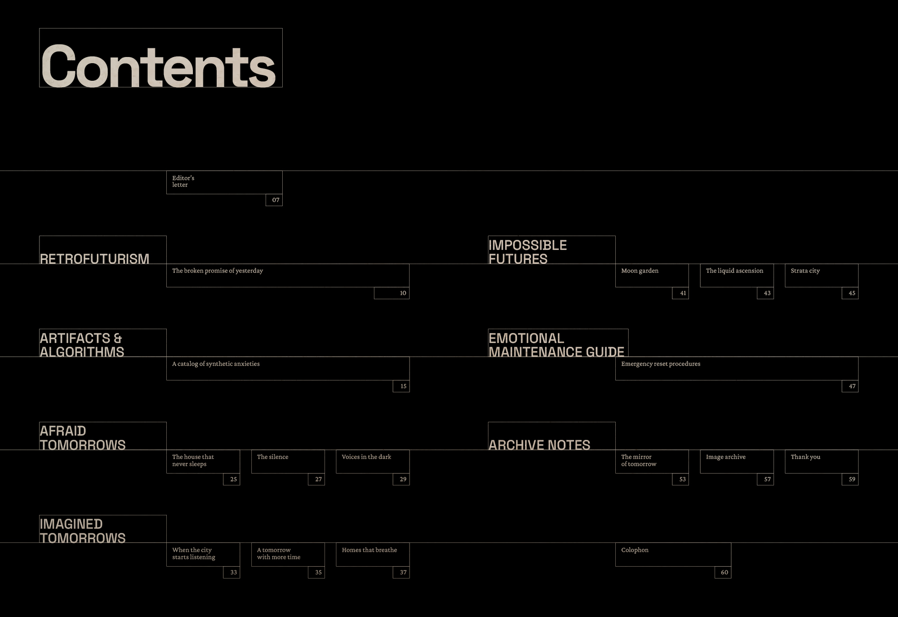
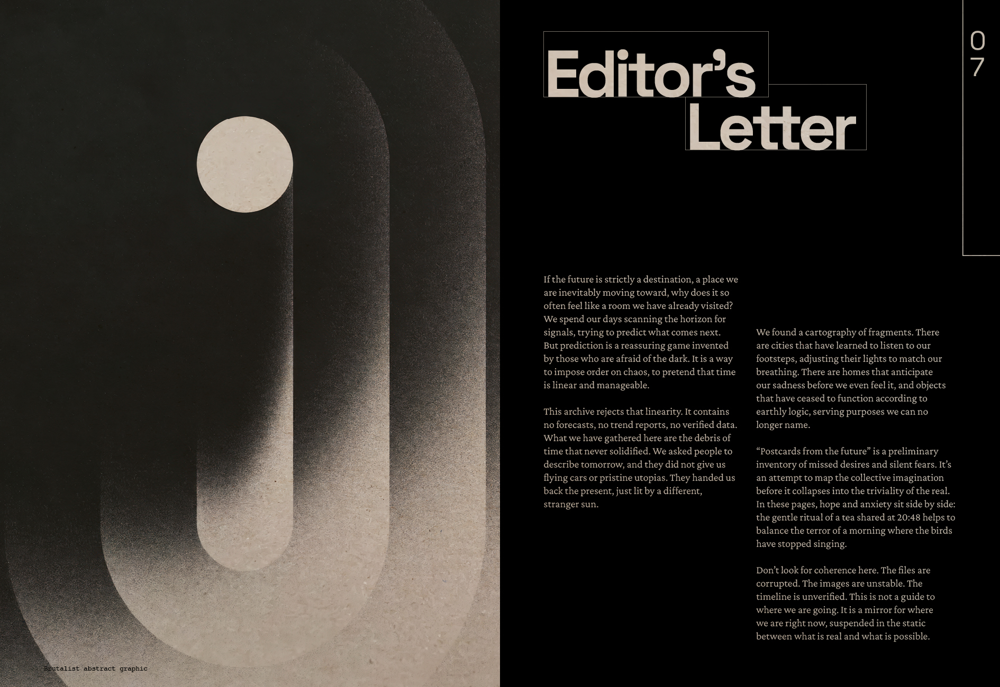
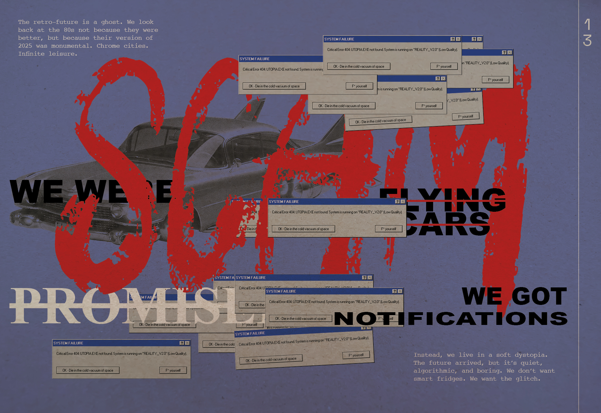
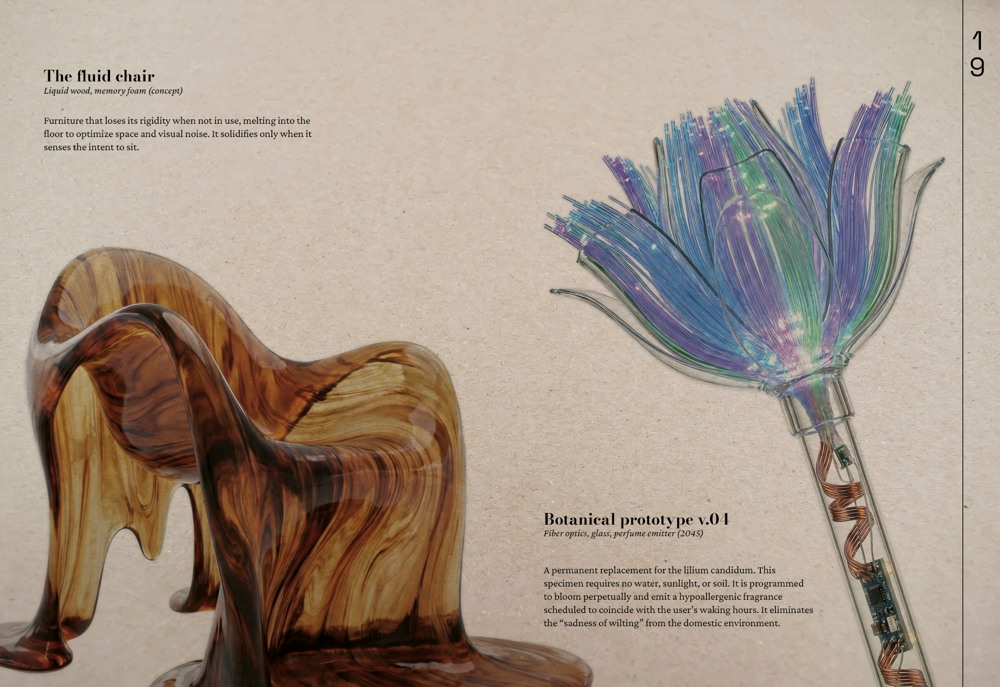
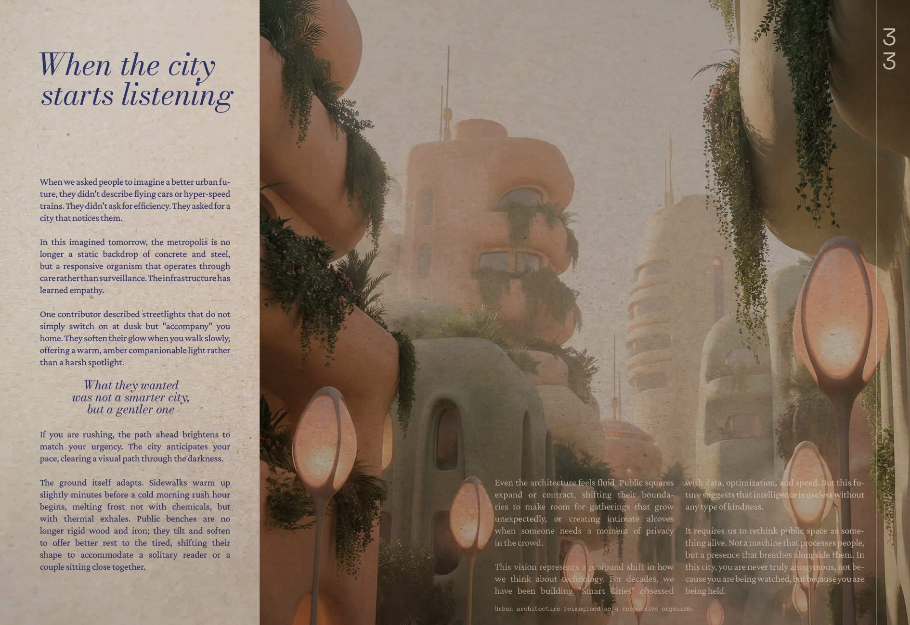
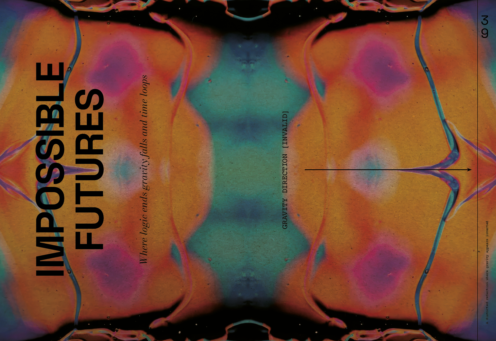
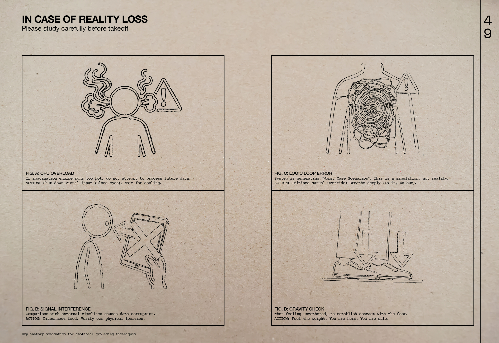

04 / 06
Design editoriale
Panoramica
Magazine tematico progettato durante il WUP Visual Communication alla Libera Università di Bolzano. Intitolato «Postcards from the Future (that never happened)», il magazine si configura come un cimitero di linee temporali abbandonate: un archivio dell'immaginario collettivo sul futuro, organizzato in sei sezioni che spaziano dal retrofuturismo alle ansie algoritmiche, dalle città empatiche all'architettura liquida.
Copertina, rilegatura a punti fatta a mano

Indice del magazine, sei sezioni, sessanta pagine

Editor's Letter, il tono dell'archivio
Approccio
Il punto di partenza è una domanda semplice: perché il futuro sembra spesso un posto che abbiamo già visitato? Il magazine parte da questa tensione per costruire un archivio dell'immaginario collettivo, non un manuale utopico del domani, ma una raccolta di ciò che è stato immaginato e non è mai accaduto.
La struttura editoriale rifiuta la linearità. Il titolo stesso è un archivio: sei sezioni, sessanta pagine, una molteplicità di voci, formati e registri visivi che coesistono senza risolversi in un'unica tesi. Il magazine non risponde alla domanda sul futuro: la amplifica.

Retrofuturism, La promessa rotta dell'ieri
Afraid Tomorrows, Distopie domestiche e silenzi algoritmici

Artifacts & Algorithms, Un catalogo di ansie sintetiche

Imagined Tomorrows, Quando la città impara ad ascoltare

Impossible Futures, Dove la logica finisce e la gravità cambia direzione

Emotional Maintenance Guide, Procedure di reset d'emergenza
Approccio
Il concept è stato volutamente spinto fuori dai canoni grafici tradizionali. Stiamo raccontando il futuro, molteplici possibilità del futuro, qualcosa di incerto, che non sappiamo ancora che forma estetica potrà avere. Non ha senso imporgli una griglia unica, un solo carattere, una sola palette: sarebbe una bugia visiva.
Per questo ogni sezione ha le sue typeface, una griglia diversa e una palette autonoma: il glitch grafico e il rosso aggressivo di Retrofuturism, l'eleganza da catalogo scientifico di Artifacts & Algorithms, il nero opprimente delle distopie domestiche in Afraid Tomorrows, la luce organica di Imagined Tomorrows, le geometrie impossibili di Impossible Futures, le tavole IKEA ricontestualizzate dell'Emotional Maintenance Guide. La discontinuità non è un difetto di sistema: è il sistema.
Approccio
Il sistema tipografico si costruisce attorno a quattro voci in dialogo: Space Grotesk e Bodoni Moda per i titoli, grotesk condensed e serif classico, tensione tra contemporaneità e storia, Crimson Pro per i testi narrativi, Courier per i dati d'archivio. La scelta di Courier non è nostalgia: è un codice visivo che segnala «dato grezzo», informazione non elaborata, documento.
La stampa su carta RC kraft grigia (280 gsm per la copertina, 100 gsm per le pagine interne) restituisce un'opacità materica che i magazine patinati non possono offrire. La rilegatura a punti fatta a mano rafforza il senso di oggetto da conservare: un archivio fisico in un'epoca di file temporanei.
Università
Libera Università di Bolzano
Corso
WUP – Visual Communication
Facilitatori
Antonino Benincasa
Rocco Lorenzo Modugno
Andrea Maffei
Anno
2025